Staffify is architected for enterprise-scale human capital management, ensuring high availability, sub-second query performance, and strict regulatory compliance.
Technical Stack
Frontend Layer: React 19 SPA bundled via Vite, styled using Tailwind CSS and the Atlassian Design System palette (#0052CC, #0747A6, #090D14, #172B4D). Icons are rendered via Lucide React.
Backend API Layer: Node.js and Express.js REST application operating under strict JSON contracts, rate limiting, Helmet HTTP security headers, and correlation trace IDs (X-Request-Id).
Data Persistence Layer: MongoDB Atlas with 39 specialized Mongoose schemas featuring secondary indexes on employeeId, date, jobId, candidateId, and status.
NoSQL Injection Defense: Sanitization middleware automatically strips recursive $ and . operators from URL parameters and request payloads.
IDOR Protection: All record mutations verify authorization context to prevent cross-tenant and horizontal privilege escalations.
2. Role-Based Access Control (RBAC) Matrix
Staffify categorizes system capabilities across three standardized operational tiers:
Module / Capability
Employee (ESS)
Manager (MSS)
Administrator (HR)
Self-Service Dashboard & Clock-In
Allowed
Allowed
Allowed
Personal Attendance & Regularization
Allowed
Allowed
Allowed
Team Attendance Oversight & Approval
Restricted
Allowed
Allowed
Leave Balance & Leave Application
Allowed
Allowed
Allowed
Subordinate Leave Approval Tray
Restricted
Allowed
Allowed
Employee Master Directory (360 Dossiers)
Read-Only
Read-Only (Team)
Full Control
Payroll Processing & Statutory Lock
Restricted
Restricted
Full Control
Self-Service Payslip View & Print
Allowed
Allowed
Allowed
Goal Setting, OKRs & SMART Refiner
Allowed
Allowed
Allowed
Performance Appraisals & 1-on-1s
Self Review
Calibrate & Grade
System Config
Recruitment Pipeline & Candidate ATS
Restricted
Interviewer Mode
Full Pipeline Control
Expense Claims Submission & OCR
Allowed
Allowed
Allowed
Expense Reimbursement Approval Tray
Restricted
Allowed
Allowed
Shift Schedule & Shift Swapping
Allowed
Team Roster Matrix
Global Config
IT Service Desk Tickets & Assets
Allowed
Triage Support
Inventory Control
Project Timesheets Logging
Allowed
Review & Approve
Financial Audit
Executive Headcount Analytics
Restricted
Department Scope
Organization Scope
Resignation & Offboarding Clearances
Self Resign
Department Clearance
Full & Final Payout
AI Copilot & Multimodal Studio
Role-Scoped
Role-Scoped
Full System Access
Tamper-Evident Audit Trail Logs
Restricted
Read-Only
Audit Export
Outbound Webhook Bridge Gateway
Restricted
Restricted
Configure & Dispatch
3. Authentication & Session Lifecycle
The authentication gateway provides single-credential login with instant role preview presets for rapid enterprise testing and deployment.
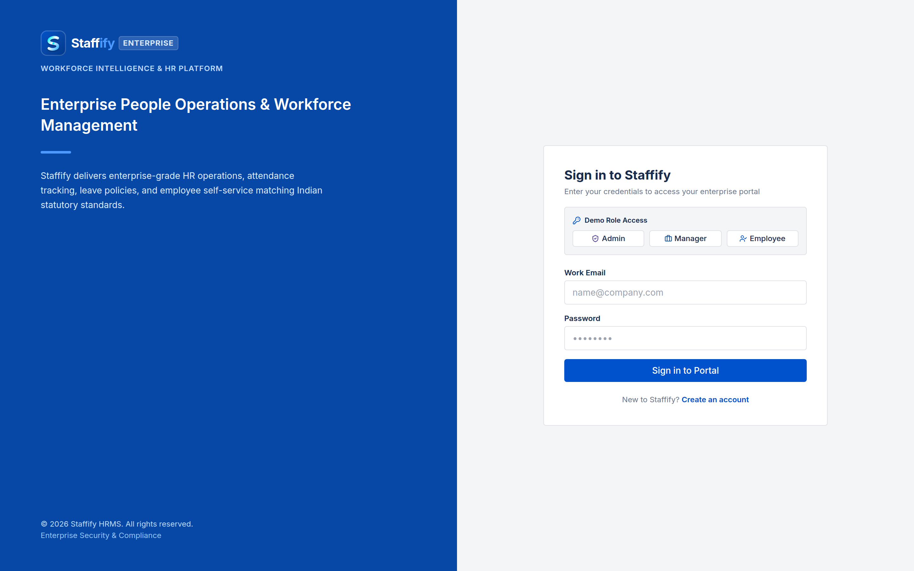
Figure: Staffify Unified Enterprise Login Gateway
Key Features
JSON Web Token (JWT) Security: Issues cryptographically signed 24-hour access tokens containing user identifiers, employee IDs, and verified system roles.
BCrypt Password Hashing: Passwords stored using 10 salt rounds with adaptive computational work factor.
Demo Role One-Click Switchers: Immediate access to verified demo accounts:
Module 01: Workforce Command Center & Executive Dashboard
The central landing command center synthesizes workforce KPIs, daily attendance widgets, real-time announcements, and pending action items.
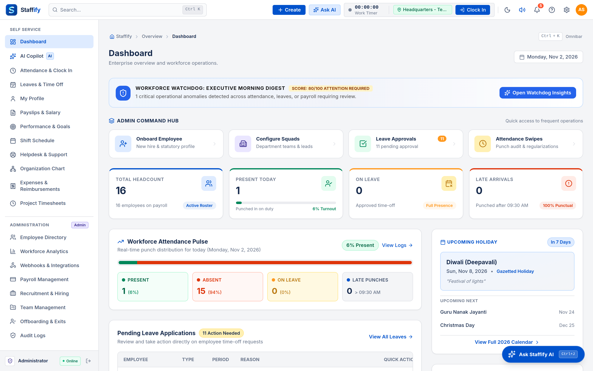
Figure: Workforce Command Center & Dashboard
Key Functional Capabilities
1. Real-Time Attendance Clock-In Widget:
- Single-click Clock In and Clock Out action dispatcher with live time tracking.
- Automatically registers current IP address, GPS coordinate perimeters, and biometric device bindings.
2. Executive Metric Tiles:
- Displays Total Headcount, Today's Present Workforce, Pending Leave Applications, and Active Support Tickets.
3. Interactive Quick Actions Toolbar:
- Deep-linked shortcuts to Apply for Leave, Submit Reimbursement Claims, Log IT Tickets, or Launch AI Copilot.
4. Broadcast & Announcement Feed:
- Organization-wide notices published by HR leadership with priority banners and delivery timestamps.
Comprehensive daily timekeeping and physical workplace tracking combining mobile GPS geofencing, IP whitelisting, and eSSL/ZKTeco push biometric terminals.
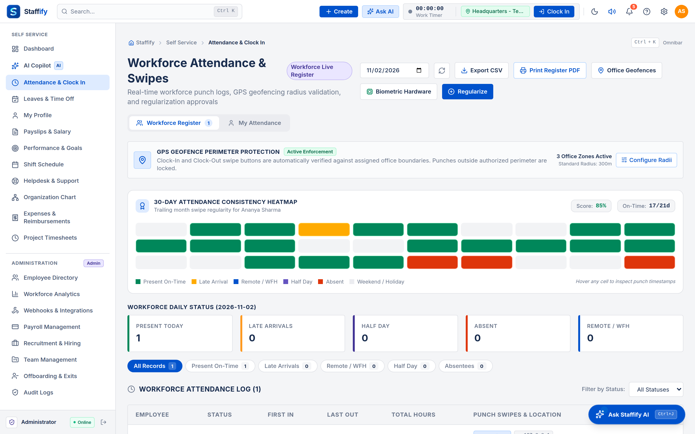
Figure: Attendance Register & Geofencing Monitor
Daily Work Hours & Status Rules
Present: First clock-in on or before 09:30 AM with at least 8.0 logged working hours.
Late Check-In: First clock-in after 09:30 AM (marked with warning status lozenge).
Half Day: Total daily logged duration between 4.0 and 8.0 hours.
Absent: Under 4.0 hours recorded with no approved leave or regularization.
Geofence Enforcement & Mobile Validation
Automatically measures Euclidean and Haversine distance between mobile clock-in GPS coordinates and corporate office coordinates (e.g. Bangalore HQ: 12.9716, 77.5946 within a 150-meter radius).
Outside-perimeter punches flag an Unverified Location anomaly for supervisor review.
Embedded AI Regularization Reason Drafter
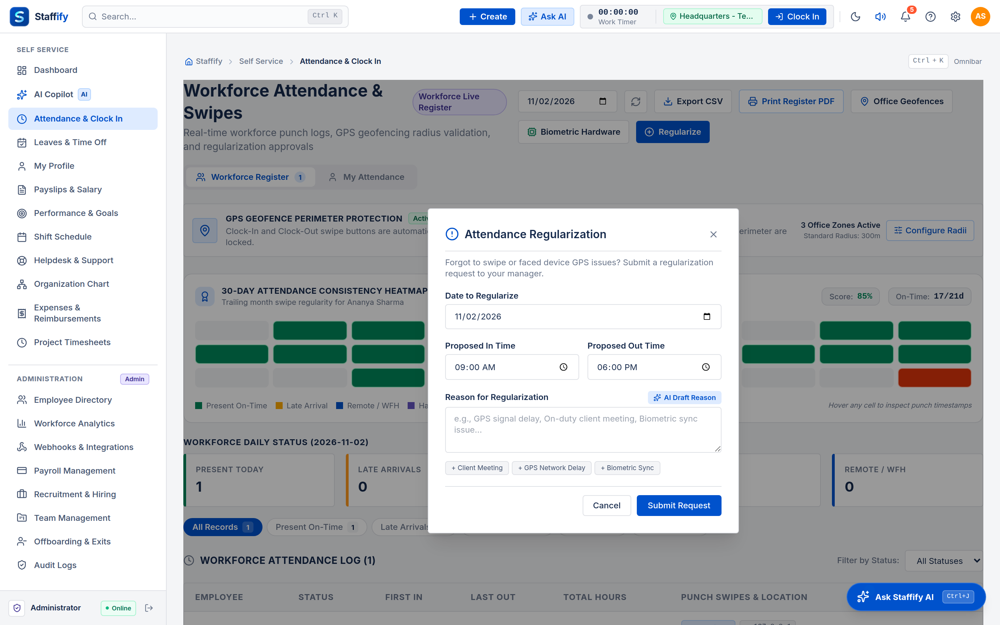
Figure: AI Attendance Regularization Modal
When an employee experiences turnstile delays or remote client travel: 1. Click Regularize on the disputed attendance row. 2. Click AI Draft Reason to automatically synthesize a legally sound explanation. 3. Or select quick corporate preset pills: - GPS geofence radius deviation due to mobile network carrier latency. - Biometric terminal hardware synchronization delay at entrance turnstile. - Official duty client travel with reporting manager pre-authorization. 4. Submit the request directly to the manager's approval tray.
Unified annual, casual, sick, and compensatory off management adhering strictly to statutory labour frameworks and corporate leave policies.
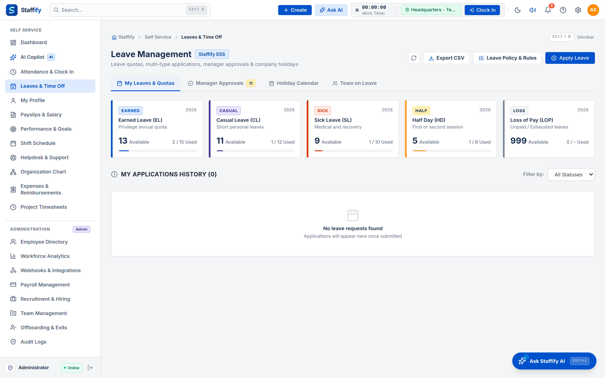
Figure: Leave Quotas & Approval Management
The Statutory Sandwich Rule
Under Staffify's automated sandwich rule engine:
If an employee takes leave on Friday and Monday (bridging a weekend), Saturday and Sunday are automatically counted as leave days if the company's sandwich policy is enabled.
Prevents uncoordinated long-weekend absenteeism while maintaining mathematical balance tracking.
Embedded AI Leave Reason Drafter
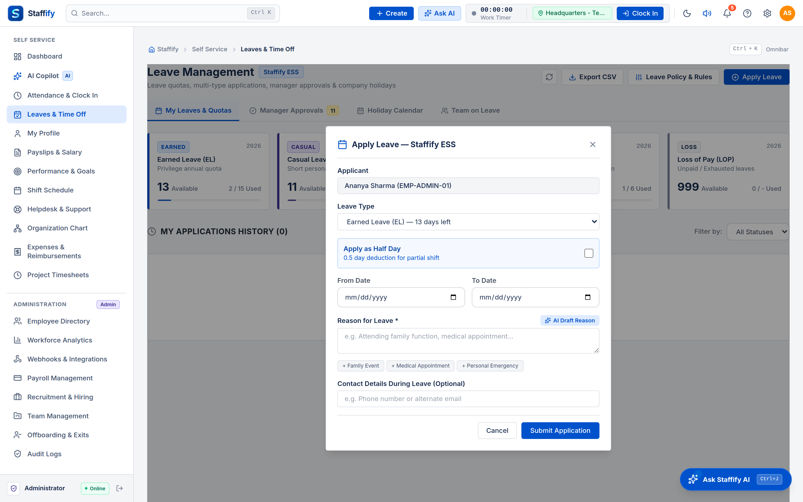
Figure: Apply Leave Modal with AI Reason Drafter
One-Click Professional Drafter: Formulates courteous, unambiguous reasons for planned absences.
Contextual Scenario Pills:
- Personal family commitment requiring planned absence; reachable via phone if urgent.
- Scheduled medical check-up and restorative wellness rest.
- Out-of-town domestic and municipal documentation work.
Live Balance Projection: Dynamically computes remaining balance for Casual (CL), Sick (SL), and Earned (EL) leave quotas prior to submission.
House Rent Allowance (HRA): 50% of Basic Salary (for metro locations).
Special Allowance: Balancing component (CTC - Basic - HRA).
Employee Provident Fund (EPF): 12% of Basic Salary (statutory cap applicable).
Employee State Insurance (ESIC): 0.75% of Gross Pay (for employees earning up to INR 21,000/month).
Professional Tax (PT): INR 200/month (statutory state slab).
TDS / Income Tax: Dynamically calculated based on Old vs New regime tax declarations.
Administrative Controls
Run Monthly Payroll: Automatically aggregates working days, unpaid leaves (LWP), and approved loan EMI deductions to produce finalized payroll drafts.
Statutory Returns Export: 1-click download of EPFO Electronic Challan cum Return (ECR) text files, ESIC contribution statements, and NEFT/RTGS bank disbursement sheets.
Secure portal for employees to review historical monthly compensation, statutory deductions, tax withholdings, and download authentic salary statements.
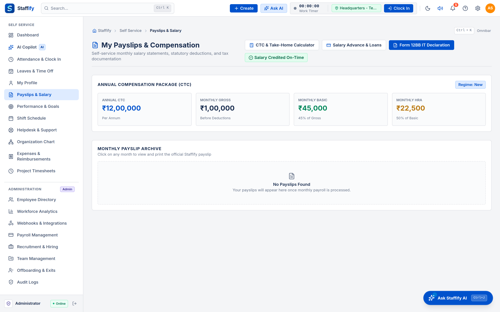
Figure: Employee Payslip Self-Service Portal
Features
Visual Breakdown: Interactive cards showing Net Pay, Gross Earnings, and Total Deductions for every historical cycle.
Zero-Popup Vector Print: Launches browser print dialog to print or "Save as PDF" with pristine vector fonts, letterhead styling, and net pay in words (e.g. INR One Lakh Forty-Three Thousand Only).
Module 07: Performance Management, OKRs & AI SMART Refiner
Continuous performance management aligning individual key results with organizational Objectives and Key Results (OKRs).
Figure: Performance Objectives & OKRs
Key Capabilities
OKR Progress Sliders: Drag-and-drop progress percentage tracking with visual completion statuses (Not Started, In Progress, On Track, At Risk, Completed).
Quarterly Appraisals: Multi-tier review workflow supporting self-appraisal submissions, manager evaluations, and normalized final ratings.
Continuous 1-on-1 Logs: Action item tracker for manager-employee coaching syncs.
Embedded AI SMART Goal Refiner
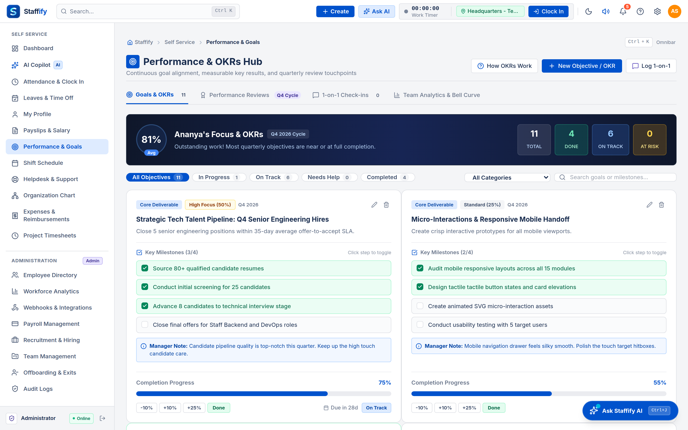
Figure: AI SMART Goal Refiner Modal
Transform vague, non-actionable goals into structured OKRs: 1. Type a rough idea (e.g. Speed up app or Learn cloud). 2. Click AI SMART Refiner. 3. The engine automatically formulates: - A crisp, inspiring Objective Title (e.g. Accelerate Platform Query Execution & Attain Sub-200ms API Response Benchmark). - Three Measurable Key Milestones (e.g. Index high-traffic MongoDB collections, Implement in-memory caching tier, Reduce bundle transfer payload by 35%). - Appropriate Category and Focus Level Weightage.
Module 08: Recruitment ATS, Job Requisitions & AI Interview Kits
End-to-end Applicant Tracking System (ATS) managing job postings, resume parsing, candidate stages, and interview scorecards.
Embedded AI Multimodal Resume Parser & Interview Kit
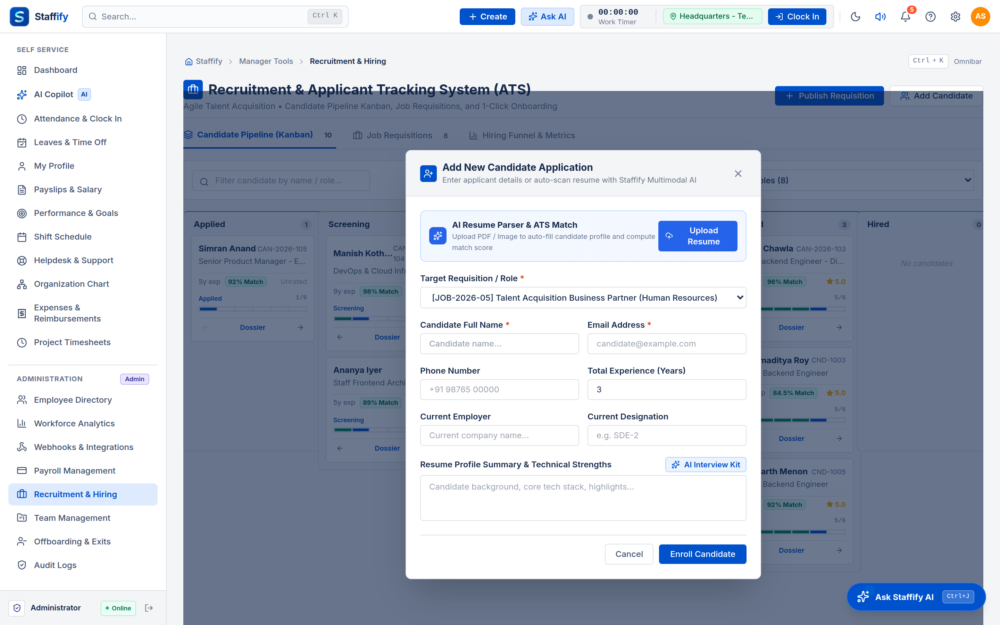
Figure: Candidate Application Modal with AI Interview Kit
Multimodal Resume OCR: Upload a candidate PDF resume to auto-populate contact details, years of experience, current employer, and calculate an ATS match score.
AI Interview Kit Generator: Synthesizes 3 customized technical and behavioral interview questions tailored to the requisition title and experience level.
Scorecard Feedback Assistant: Inside the candidate dossier, interviewers can click AI Assessment Drafter to quickly synthesize balanced, structured interview notes.
When an employee enters claim details in the submission modal:
The system checks line-item amounts against corporate category thresholds (e.g. INR 2,500 for Food, INR 5,000 for Local Conveyance, INR 15,000 for Travel).
Displays real-time warnings if a claim exceeds policy limits or requires senior management override.
Printable Reimbursement Vouchers
Click Print Voucher PDF on any approved or pending claim.
Generates a formal A4 reimbursement voucher complete with tax breakdown, category codes, policy compliance seal, and employee/approver signature lines.
Calculates statutory gratuity for employees completing 5+ years of continuous service.
Generates official Relieving and Experience certificates.
Module 16: Staffify AI Copilot & Multimodal Document Studio
Centralized enterprise AI workspace combining verified database intelligence with legal HR document generation.
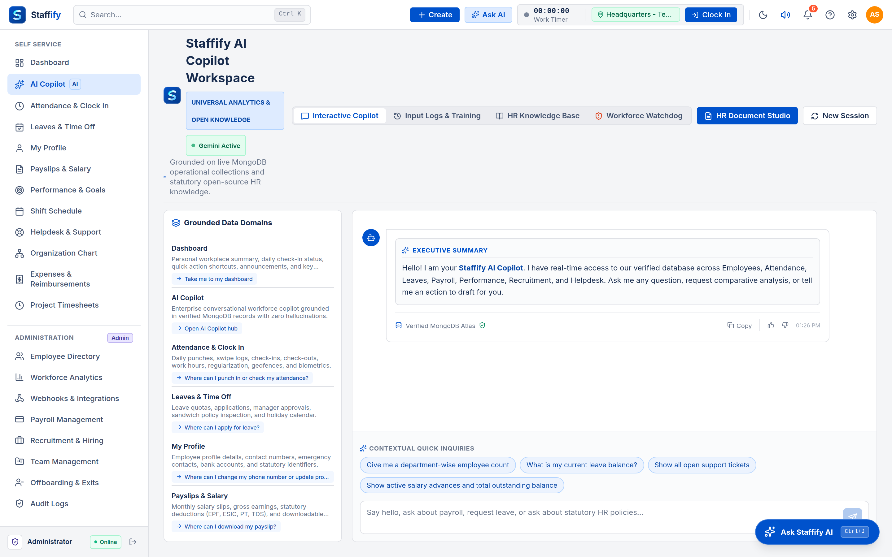
Figure: Staffify AI Copilot & Document Studio
Dual-Tab Capabilities
Tab 1: AI Copilot Assistant:
- Conversational natural language queries backed by our Deterministic Semantic Query Engine (DSQE).
- Verifies database records in real time with zero hallucination.
- Suggests interactive module navigation cards and pre-drafted authorized actions.
Tab 2: Multimodal Document Studio:
- Auto-synthesizes standardized, legally grounded Appointment Letters, Relieving Letters, Bonafide Certificates, and Salary Revision Letters.
- Generates downloadable print-ready documents with official letterhead and authorized signatory seals.
Module 17: Tamper-Evident System Audit Trail Logs
Enterprise compliance audit log capturing all security-sensitive actions across the platform.
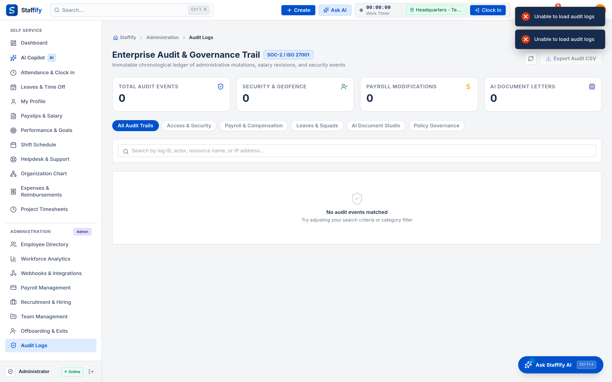
Figure: Tamper-Evident System Audit Trail Logs
Recorded Event Metadata
Timestamp: Precise millisecond ISO timestamp.
Actor Identity: User ID, name, and role initiating the event.
Action Type: E.g. LOGIN_SUCCESS, PAYROLL_LOCKED, EMPLOYEE_MUTATED, EXPENSE_APPROVED.
IP Address & User Agent: Client origin IP and browser signature.
Target Record: Affected database collection and entity identifier.